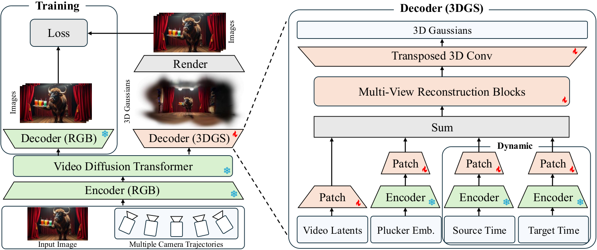
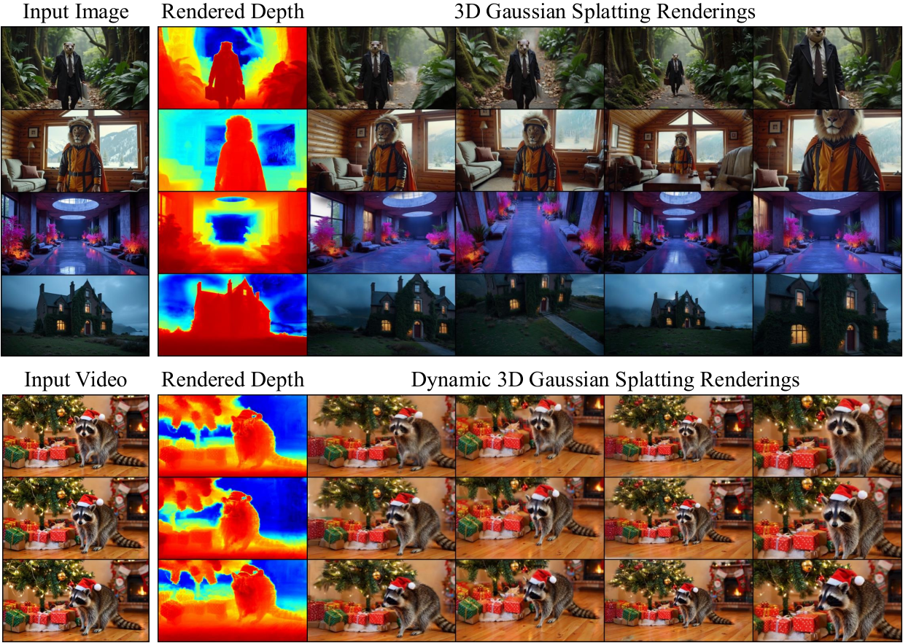
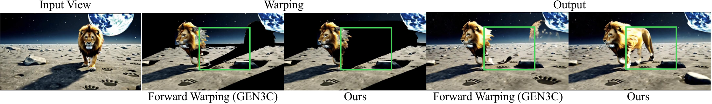
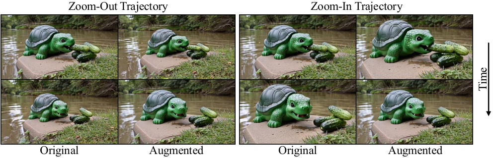
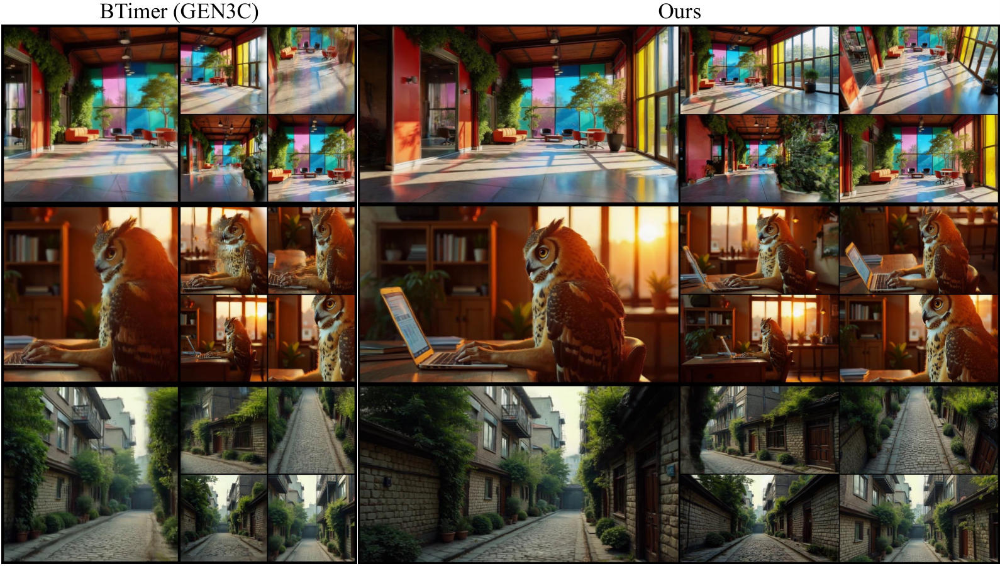
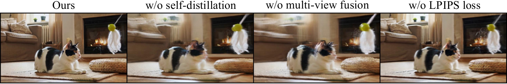
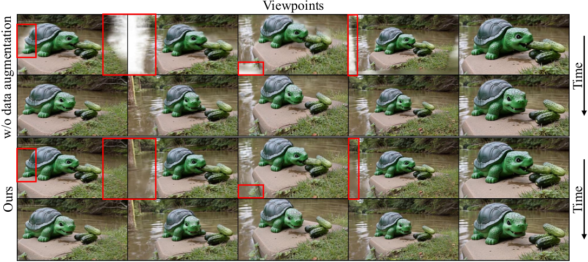
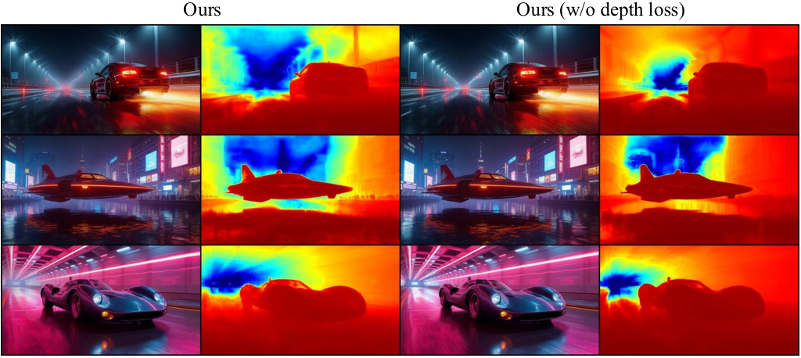

1论文摘要与核心贡献
Lyra 来自 NVIDIA 多伦多 AI 实验室(与多伦多大学、Vector Institute 合作),一作 Sherwin Bahmani,ICLR 2026 接收。任务定义是「生成式 3D 场景重建」(generative 3D scene reconstruction):从文本或单张图像前馈生成显式 3DGS 场景,并从单目视频前馈生成动态 4D(时间+视角双可控)场景。它的核心主张不是"又一个前馈重建模型",而是回答一个更根本的问题:前馈 3D 重建模型能不能不依赖任何真实世界多视角训练数据?答案是把"监督信号"从真实采集的多视角数据换成预训练相机控制视频扩散模型的生成结果——教师(GEN3C)负责想象,学生(3DGS 解码器)负责把想象固化为显式 3D 表示。
三条 contribution(原文照录)
- 提出 self-distillation 框架:以预训练相机控制视频扩散模型为教师训练 3DGS 学生解码器,消除对真实多视角采集数据的依赖(§1 contributions 列表)。
- 框架扩展到动态场景,支持从单目视频做 4D 重建(时间条件化的 3DGS 解码器)。
- 模型跨多样场景泛化,在单图 3D 场景生成与单视频 4D 场景生成上均达到 SOTA(RealEstate10K / DL3DV / T&T 三个基准全指标第一)。
2研究背景与动机
两条路线各自的死结
路线 A:多视角重建(Reconstruction)
失败模式(论文 §1):依赖精确相机位姿 + 高质量图像,扩展性差;动态场景通常需要同步多相机阵列;更根本的是——重建方法只能恢复输入视野内已有内容,无法外推(cannot extrapolate beyond the input views)。
缓解尝试及其新瓶颈:前馈重建模型(GS-LRM、AnySplat 等)免去逐场景优化,但瓶颈转移为缺乏多样、大规模的 3D 训练数据,导致 out-of-domain 泛化差——它们基本只能在 RealEstate10K 这类单一分布的场景里工作。
路线 B:视频扩散生成(Generation)
优势:在海量互联网视频上训练,保真度与泛化性极强;从手持、电影平移到无人机航拍的各种相机轨迹中隐式编码了 3D 世界先验,不需要多视角训练数据;作为生成模型,还能幻觉出输入帧之外的合理内容。
失败模式:只输出 2D 帧,没有显式 3D 表示——几何一致性、长期连贯性、物理交互全部缺位,无法用于机器人仿真等下游任务。
3算法总体框架与符号表
输入 / 输出定义
- 3D(静态)模式:输入 = 单张图像 $I$(+ 随机采样的相机轨迹 $\{\mathbf{C}^t\}_{t=1}^{L}$);输出 = 显式 3DGS 场景 $\mathbf{G}$,可从任意新视角实时渲染。
- 4D(动态)模式:输入 = 单目视频(长度 $L$)+ 对应相机位姿(ViPE 估计);输出 = 时间条件化动态 3DGS,时间与视角双可控。
符号表(与论文原文一致)
| 符号 | 含义 | 形状/取值 |
|---|---|---|
| $I$ | 输入图像(或视频帧) | $3\times H\times W$,$H\times W = 704\times 1280$ |
| $\mathcal{V}$ | 相机控制视频扩散模型(教师,GEN3C) | Cosmos-Predict1 基座,7B |
| $\mathcal{D}_{rgb}$ | 预训练 RGB 解码器(VAE decoder,教师分支) | 冻结 |
| $\mathcal{D}_s$ / $\mathcal{D}_d$ | 静态 / 动态 3DGS 解码器(学生) | 16 层,512 维,32.75M 参数(HF 模型卡) |
| $\mathbf{z}$ / $\mathbf{Z}$ | 单条 / 多轨迹去噪视频 latent | $\mathbf{Z}\in\mathbb{R}^{V\times L'\times C\times h\times w}$ |
| $V$ / $L$ | 相机轨迹数 / 每轨迹帧数 | $V=6$,$L=121$(训练与推理同规格) |
| $C$ | latent 通道数 | 16(Cosmos VAE) |
| $\tau$ / $\sigma$ | VAE 时间 / 空间压缩因子 | $\tau=8$,$\sigma=8$,$L'=(L-1)/\tau+1$,$h=H/8$,$w=W/8$ |
| $\mathbf{E}$ | Plücker 相机编码 latent | $\mathbf{E}\in\mathbb{R}^{V\times L'\times C\times h\times w}$ |
| $\mathbf{T}^{src},\mathbf{T}^{tgt}$ | 动态模式源/目标时间编码 | 同 latent 形状,§7 |
| $\mathbf{G}$ | 输出 3DGS 特征 | $\mathbf{G}\in\mathbb{R}^{V\times L\times H\times W\times 14}$(降采样后每 8×8 像素 1 个) |
| $\mathbf{P}^{t,v}$ | GEN3C 时空 3D cache 点云 | $L\times V$ 数组,§4 |
| $\mathbf{I}^{t,v},\mathbf{M}^{t,v}$ | cache 渲染图 / disocclusion 掩码 | $(\mathbf{I},\mathbf{M})=\mathcal{R}(\mathbf{P},\mathbf{C}^t)$ |
阶段划分
整个系统分四个阶段,训练阶段(①②)与推理阶段(③④)解耦:
- 教师数据生成(离线,训练前):LLM 采多样文本 prompt → 图像扩散模型(Flux)生成单图 → GEN3C 沿 6 条采样轨迹各生成 121 帧多视角视频,同时产出 latent $\mathbf{Z}$ 与 RGB 帧;4D 模式从文本生成单目视频,ViPE 标定位姿与深度。
- 学生训练:冻结教师,训练 3DGS 解码器 $\mathcal{D}_s$,损失 = 3DGS 渲染 vs RGB 解码输出的图像损失 + ViPE 深度监督 + opacity 正则。
- 推理(SDG 生成):单图/单视频 → GEN3C 多轨迹生成 → 只保留 latent。
- 推理(3D 解码):latent + Plücker 编码 → 3DGS 解码器一次前馈 → 剪枝 → .ply 导出。
总体数据流图
生成单图 I"] T2I --> GEN3C["GEN3C 教师生成
(冻结, 沿 6 条轨迹 × 121 帧)"] GEN3C --> Z["多视角视频 latent
Z: V×L'×16×88×160"] GEN3C --> RGBD["RGB 解码帧(教师监督信号)
+ ViPE 深度"] Z --> SUM["⊕ 相加(先 patchify)"] E["Plücker 相机编码 E
(VAE encoder 编码 + MLP)"] --> SUM SUM --> BLOCKS["重建主干 ×2 块
每块 = 1×Transformer + 7×Mamba-2
共 16 层, 512 维"] BLOCKS --> DECONV["转置 3D 卷积
上采样到像素网格"] DECONV --> G14["14 通道高斯头
xyz+scale+quat+opacity+RGB
沿光线参数化位置"] G14 --> RENDER["gsplat 渲染
(训练轨迹视角)"] RGBD --> LOSS["图像损失 MSE+LPIPS
深度损失 + opacity 正则"] RENDER --> LOSS G14 --> OUT["推理输出: ~2M 高斯
18ms/帧 实时渲染"] style GEN3C fill:#dbeafe,stroke:#3b82f6,color:#1e3a5f style Z fill:#ede9fe,stroke:#8b5cf6,color:#3b2f63 style BLOCKS fill:#d1fae5,stroke:#10b981,color:#064e3b style OUT fill:#fee2e2,stroke:#ef4444,color:#7f1d1d


4教师模型:GEN3C 与保守渲染函数
3.1 GEN3C 背景设定
Lyra 完全依赖教师的 3D 一致性(学生没有第二条监督来源),因此基座选择相机控制视频扩散模型 GEN3C(Ren et al., 2025),其三个关键设计:
① 时空 3D cache
GEN3C 从输入图像/视频构建时空 3D cache $\{\mathbf{P}^{t,v}\}$:每个 $\mathbf{P}^{t,v}$ 是对 RGB 图做深度估计(DepthAnything 系,Wang et al., 2024a)后反投影得到的带颜色点云,按 $L\times V$ 数组组织($L$ 帧时间维 × $V$ 视角维)。
② 渲染式结构引导
沿目标相机轨迹把 cache 点云前向投影渲染出 RGB 图与 disocclusion 掩码:$(\mathbf{I}^{t,v},\mathbf{M}^{t,v})=\mathcal{R}(\mathbf{P}^{t,v},\mathbf{C}^{t})$,作为扩散模型的结构条件。掩码显式告诉模型"哪里需要补全"。
③ 视频 VAE
RGB 视频 $\mathbf{I}\in\mathbb{R}^{L\times 3\times H\times W}$ 经 VAE 编码器 $\mathcal{E}$ 压缩到 latent $\mathbf{z}=\mathcal{E}(\mathbf{I})\in\mathbb{R}^{L'\times C\times h\times w}$,扩散在 latent 空间进行,最终 $\hat{\mathbf{I}}=\mathcal{D}_{rgb}(\mathbf{z})$。关键参数:$C=16$、$\tau=8$(时间)、$\sigma=8$(空间),即 $L'=(L-1)/8+1$、$h=H/8$、$w=W/8$(论文 §3.1)。

5学生模型:3DGS 解码器
5.1 为什么在 latent 空间做前馈重建(尺度论证)
这是论文最有说服力的工程论证(§4.1):像素级前馈方法每个像素出一个高斯,注意力开销随像素数爆炸——GS-LRM 只能吃 2–4 张 512×512,AnySplat 是 24 张 448×448。而 Lyra 要处理 $V\times L = 6\times 121 = 726$ 个视角 × $704\times 1280$ 分辨率,超出 GPU 显存极限。解法:不在像素空间操作,直接消费 VAE 压缩了 64 倍(8×8×1)的 latent——消融实验证实,同样的 3DGS 解码器放回像素空间直接 OOM(§6.3 "w/o latent 3DGS" 行)。
5.2 网络结构表(五件套 ①)
| 阶段 | 输入 | 算子 | 输出形状 |
|---|---|---|---|
| 输入组装 | 视频 latent $\mathbf{Z}$ + Plücker latent $\mathbf{E}$(各 $V\times L'\times 16\times 88\times 160$) | 各 2×2 patchify → 求和 | token 序列,隐维 512 |
| 重建主干 | patchified token | 块 = 1×Transformer + 7×Mamba-2(Long-LRM 设计),重复 2 次 → 16 层 | $V\times L'\times h\times w\times 512$(隐空间网格) |
| 上采样头 | 隐网格 | 转置 3D 卷积,patch_size_out_factor = [1,8,8] | $V\times L\times H\times W\times C_{out}$(像素网格) |
| 高斯参数化 | 像素网格特征 | 每 8×8 空间邻域 1 个高斯;位置沿光线预测(见下) | 高斯属性 [B, N, 14] |
output_dims: 12(configs/training/default.yaml)——12 通道为 scale(3)+rotation(4)+opacity(1)+RGB(3),位置不在反卷积输出里,而是由网络额外预测 1 维沿光线深度,与光线原点/方向反算得到(见 5.4)。两者并不矛盾:反卷积输出 + 深度图共同拼出 14 通道高斯。这是论文叙述与代码粒度的差异点。无视觉编码器,只有 patchify
输入 latent 已是 VAE 特征,不需要任何视觉编码器,仅用 2×2 空间 patchification(Dosovitskiy et al., 2021, ViT 同款)把 latent 转成 token 流。
Plücker 相机编码(两段式)
- 在全分辨率上计算原始 Plücker 嵌入 $\mathbf{E}^{raw}\in\mathbb{R}^{V\times L\times 6\times H\times W}$(射线方向 3 维 + 方向×原点叉积 3 维);
- RGB 编码器 $\mathcal{E}$ 期望 3 通道输入,故把 6 维拆成两组 3 通道分别过同一个 $\mathcal{E}$,沿通道维拼接得 $\mathbf{E}^{enc}\in\mathbb{R}^{V\times L'\times 2C\times h\times w}$;
- 轻量 MLP 降到 $C$:$\mathbf{E}\in\mathbb{R}^{V\times L'\times C\times h\times w}$,与 $\mathbf{Z}$ 同形。
5.3 数学形式化(五件套 ②)
动态版把时间编码直接加进求和项:$\mathbf{G}=\mathcal{D}_d(\mathbf{Z},\mathbf{E},\mathbf{T}^{src},\mathbf{T}^{tgt})$。
5.4 高斯位置:沿光线参数化(代码佐证)
网络不直接回归世界系 $(x,y,z)$,而是预测沿光线的标量深度并映射到预设近远平面区间:pre_sigmoid_distance_shift: -1.65(configs/training/default.yaml),即
其中 $\text{dnear}=0.1$、$\text{dfar}=500$(default.yaml)。机制解释:让深度先验落在近平面附近(1.65 ≈ sigmoid 中心偏移),网络只需预测相对深度,数值范围稳定,比直接回归世界坐标更易训练。最终拼接:gaussians = torch.cat([pos, opacity, scale, rotation, rgbs], dim=-1)(model_latent_recon.py:350),注释即 [B, N, 14]。激活函数:opacity_act = sigmoid(x-2.0)(model_latent_recon.py:190)——偏置 -2 使初始 opacity 偏低,配合剪枝策略。
5.5 前向流程列表(五件套 ③)
- GEN3C 沿 $V=6$ 条轨迹各生成 $L=121$ 帧视频 latent $\mathbf{z}^v$($v=1..6$),堆成 $\mathbf{Z}\in\mathbb{R}^{6\times 16\times 16\times 88\times 160}$($L'=(121-1)/8+1=16$)。
- Plücker 嵌入经 $\mathcal{E}$ 编码为 $\mathbf{E}$,与 $\mathbf{Z}$ 同形;各自 2×2 patchify 后逐元素相加(不是拼接)。
- 过重建主干:2 个块 × (1 Transformer + 7 Mamba-2) = 16 层,隐维 512。所有轨迹的 token 在同一序列里联合 attention,多视角融合由网络隐式学习(没有手工拼接/后融合)。
- 转置 3D 卷积上采样([1,8,8] 步幅)回像素网格;时间维上每帧高斯独立(静态模式)。
- 输出高斯属性 + 沿光线深度 → 反算 3D 位置 → 拼成 [B, N, 14]。
- gsplat 渲染训练轨迹视角,与教师 RGB 帧算损失。一次前馈、全程可导(渲染在训练轨迹上用可微 splatting;推理用 3DGUT 路径,
use_3dgut: true)。
5.6 模块内部图(五件套 ④)
6×16×16×88×160"] E["E: Plücker latent
6×16×16×88×160"] end subgraph PATCH["Patchify + 融合"] P1["2×2 patchify Z"] --> ADD["⊕"] P2["2×2 patchify E"] --> ADD end subgraph BACKBONE["重建主干(联合序列 attention)"] B1["块1: Transformer×1 → Mamba-2×7"] B2["块2: Transformer×1 → Mamba-2×7"] B1 --> B2 end subgraph HEAD["高斯头"] D3["转置 3D 卷积
stride [1,8,8]"] DEP["深度分支
sigmoid(d-1.65) → [0.1, 500]"] GA["属性激活
opacity: σ(x-2)"] end Z --> P1 E --> P2 ADD --> B1 B2 --> D3 D3 --> DEP D3 --> GA DEP --> OUT["[B, N, 14] 高斯
N = 10,222,080 → 剪枝 2,044,416"] GA --> OUT style ADD fill:#dbeafe,stroke:#3b82f6,color:#1e3a5f style B1 fill:#ede9fe,stroke:#8b5cf6,color:#3b2f63 style B2 fill:#ede9fe,stroke:#8b5cf6,color:#3b2f63 style OUT fill:#d1fae5,stroke:#10b981,color:#064e3b
5.7 监督信号(五件套 ⑤)
该模块的监督即 self-distillation 核心回路:教师的 RGB 解码输出 $\mathbf{I}_{\mathcal{D}_{rgb}}$(6 轨迹全部帧)+ ViPE 深度图,监督学生的 3DGS 渲染。共 4 项损失(权重与公式见 §6)。注意训练时教师生成与学生学习分两步离线进行(先离线生成数据集再训练),不是联合在线蒸馏;因此教师梯度不需要回传,VAE 与扩散主干全程冻结。
6损失函数总表
总损失(论文式 1):
| 损失项 | 公式/形式 | 权重(真值) | 作用与实现细节 |
|---|---|---|---|
| $\mathcal{L}_{mse}$ | 3DGS 渲染 vs 教师 RGB 帧的 MSE | 1.0 | 基础像素重建项;渲染目标 = 6 条轨迹的全部 726 帧监督视角 |
| $\mathcal{L}_{lpips}$ | LPIPS(VGG 特征,Zhang et al., 2018) | 0.5 | 提升对教师生成帧间不一致性的鲁棒性 + 保高频细节;实现按 chunk 计算(loss.py:73-125,lpips_chunk_size 控制显存) |
| $\mathcal{L}_{depth}$ | scale-invariant 深度损失(Long-LRM 式) | 0.05 | GT = ViPE 估计的一致视频深度;median 中心化后 smooth-L1(loss.py:39-42,55-67)——纯 RGB 监督会训出扁平几何,消融见 §11 |
| $\mathcal{L}_{opacity}$ | opacity L1 正则 | 0.1 | 实现为对 sigmoid 后 opacity 取 mean(loss.py:143);配合训练后剪掉 opacity 最低的 80% 高斯 |
lambda_opacity: 0.1,gaussians_prune_ratio: 0.8,该阶段 max_train_steps: 83000);主静态阶段 multi_6.yaml 未覆写(lambda_opacity: 0.0,default.yaml)。即真实训练顺序是:先训 82000 步不带 opacity 正则,再加正则微调 1000 步,然后剪枝。笔记按论文权重呈现表格,启用时机以此为准。
7扩展到动态场景(video-to-4D)
动态扩展是 Lyra 框架的"便宜加法"——教师和学生各改一处,主干架构不动。
教师侧:数据管线改造
不再从单图,而是从单目视频出发:LLM 采 prompt → 视频扩散模型(Cosmos / Wan)生成视频 → ViPE(Huang et al., 2025)标注相机位姿与深度图 → GEN3C 沿 6 条轨迹生成"同一运动、不同视角"的多视角视频 latent。监督信号的时空结构:每个目标时刻 $t$ 只能被该时刻的轨迹帧监督(3DGS 随时间变,跨时刻帧无效)。
学生侧:时间条件化 3DGS 解码器
- bullet-time 设计(Liang et al., 2025b):为视频中每一帧生成一份时间依赖的 3DGS(而不是拟合单一形变场),推理时任意"时刻×视角"组合即时解码渲染。
- 输入扩展:新增源时间 $\mathbf{T}^{src}$ 与目标时间 $\mathbf{T}^{tgt}$ 两个编码,形状同 latent($V\times L'\times C\times h\times w$)。原始时间只有 1 通道($\mathbf{T}^{src,raw}\in\mathbb{R}^{V\times L\times 1\times H\times W}$、$\mathbf{T}^{tgt,raw}\in\mathbb{R}^{V\times 1\times 1\times H\times W}$),空间重复后拼 2 维正弦嵌入凑成 3 通道,再经 RGB 编码器 $\mathcal{E}$ 编码进 latent 空间——复用 VAE 编码器编码时间,避免新设计编码网络。
- 注入方式:$\mathbf{T}^{src},\mathbf{T}^{tgt}$ 直接加到 $\mathbf{Z}+\mathbf{E}$ 的和上;对应 patchify 层初始化为零、从预训练 $\mathcal{D}_s$ 微调出 $\mathcal{D}_d$——零初始化保证微调起点等价于原静态模型,不破坏已学到的 3D 先验。
- 训练采样:每个 iteration 随机采一个目标时刻,解码该时刻的 3DGS 并用全部 12 个监督视角(见下)监督。
动态数据增广(解决训练坍缩,§5 + Figure 5/9)
解法:把输入视频按帧序反转喂给 GEN3C 再生成 6 条轨迹,反转回原运动顺序后得到 6 条"由远及近"的轨迹;与原 6 条"由近及远"轨迹配对,每个时间步获得一近一远 12 个监督视角,空间覆盖完整。该增广只用于训练,推理不需要反向轨迹。代码佐证:动态配置
num_views: 133 = 121 + 12(configs/training/3dgs_res_704_1280_views_121_multi_6_dynamic.yaml)。

8逻辑流程图
训练流程(离线两步)
121 帧多视角视频 latent"] A3 --> A4["存盘: Z + RGB 帧 + ViPE 深度/位姿"] end subgraph STEP2["步骤二: 学生 3DGS 解码器训练"] B1["加载 latent Z + Plücker E"] --> B2["前馈解码 → 渲染监督视角"] B2 --> B3{"损失计算"} B3 --> B4["MSE 1.0 + LPIPS 0.5 + 深度 0.05"] B4 --> B5["渐进训练 stage1→6(82000 步累计)"] B5 --> B6["prune 微调 1000 步
(+opacity 0.1, 剪枝 80%)"] B6 --> B7["动态微调 stage7(10000 步, 时间条件化)"] end STEP1 --> STEP2 style A3 fill:#dbeafe,stroke:#3b82f6,color:#1e3a5f style B6 fill:#fef3c7,stroke:#f59e0b,color:#713f12 style B7 fill:#ede9fe,stroke:#8b5cf6,color:#3b2f63
推理流程(两段式 SDG → 3D 解码)
6 轨迹 × 121 帧多视角 latent
(一次性, 数十秒)"] C2 --> C3["3DGS 解码器一次前馈
(3.2 秒, 704×1280×121×6)"] C3 --> C4["剪枝 80% → ~2M 高斯"] C4 --> C5["实时渲染 18ms/帧
或导出 .ply → .usdz → Isaac Sim"] style C2 fill:#dbeafe,stroke:#3b82f6,color:#1e3a5f style C3 fill:#d1fae5,stroke:#10b981,color:#064e3b style C5 fill:#fee2e2,stroke:#ef4444,color:#7f1d1d
9⚙️ 工程实现细节(源码级)
9.1 仓库结构
官方仓库 nv-tlabs/lyra 含两部分:Lyra-1/(本论文,基于 cosmos_predict1 框架)与 Lyra-2/(后续工作,2026-04-15 发布,换 WAN-14B 基座)。权重与数据在 HuggingFace:nvidia/Lyra(模型)、nvidia/PhysicalAI-SpatialIntelligence-Lyra-SDG(训练集)。
9.2 渐进训练(论文 Table 3 + 代码对照)
直接在 6×121 帧 @704×1280 上训练太贵,采用渐进策略(逐步加分辨率/帧数/视角):
| Stage | $H\times W$ | $L$ | $V$ | $S$ | $B$ | Steps |
|---|---|---|---|---|---|---|
| 1 | 176×320 | 17 | 1 | 17 | 4 | 10k |
| 2 | 176×320 | 49 | 1 | 49 | 4 | 2.5k |
| 3 | 352×640 | 49 | 1 | 49 | 2 | 2.5k |
| 4 | 704×1280 | 49 | 1 | 49 | 1 | 2.5k |
| 5 | 704×1280 | 121 | 1 | 9 | 1 | 57.5k |
| 6 | 704×1280 | 121 | 1–6 | 9 | 1 | 7k |
| 7(动态) | 704×1280 | 121 | 6 | 12 | 1 | 10k |
max_train_steps: 82000 = 10k+2.5k+2.5k+2.5k+57.5k+7k,与论文 Table 3 前 6 阶段之和吻合。论文 vs 代码差异:代码在 stage6 与 stage7 之间还有一个论文未列的 prune 阶段(
3dgs_res_704_1280_views_121_multi_6_prune.yaml,max_train_steps 83000,+1000 步开启 opacity 正则并剪枝),实际训练序列是 9 个阶段(train.sh:static 1-6 → prune → dynamic → dynamic_prune)。
9.3 训练资源账
- 硬件/时长:8× NVIDIA A100 80GB,总计 6 天(论文 Appendix B)。
- 优化器:
lr_scheduler: constant_with_warmup,warmup 100 步(configs/training/default.yaml);学习率具体值由各 stage 配置覆写,【待核实】(default.yaml 中未直见数值)。 - batch:渐进早期 4(176×320),后期 1(704×1280)。
- 3DGS 渲染实现:gsplat(Ye et al., 2025),且开启
use_3dgut: true——用 3DGUT(Wu et al., 2025a)渲染路径,论文正文未展开此点。 - 显存优化三板斧:① latent 空间操作(64× 压缩);② DeferredBP 渲染(src/rendering/gs_deferred.py):前向用无梯度光栅化、反向按视角重算,多轨迹联合训练的关键;③ LPIPS 按 chunk 计算(src/models/utils/loss.py:73)。
9.4 推理资源与依赖
- GPU 门槛:官方仅在 H100 / A100 测试;显存不足可全量 offload(diffusion transformer / tokenizer / text encoder / prompt upsampler / guardrail 五个开关,README.md:104-117),全 offload 后推理峰值显存 ~43GB。单卡 3090(24GB)即使 offload 也跑不下 GEN3C 生成段——学生 3DGS 解码器本身很小(32.75M 参数),瓶颈全在教师。
- 推理两步:①
torchrun cosmos_predict1/diffusion/inference/gen3c_single_image_sdg.py(静态)/gen3c_dynamic_sdg.py(动态,需先跑 ViPE)生成 latent;②accelerate launch sample.py --config configs/demo/lyra_static.yaml解码 3DGS(README.md:47-92)。 - 环境坑:ViPE 与 Lyra 环境不兼容,官方要求分装两个 conda 环境(README.md:94-95);ViPE 推理需加
-p lyra旗标以使用与 Lyra 相同的深度估计器。 - 依赖:requirements_lyra.txt 中核心为 torch 2.5.1 / cosmos_predict1 生态;动态模式硬依赖 ViPE 输出(位姿+深度)。
9.5 数据规模(真实值)
- 3D:59,031 张图像 × 6 轨迹 = 354,186 段视频;4D:7,378 段视频 × 6 = 44,268 段(论文 §6.1)。全部由教师生成,零真实多视角数据。
- 数据管线:LLM(OpenAI/Qwen)采 prompt → Flux 生图 → GEN3C 展开;4D 用 Cosmos/Wan 生成视频再 ViPE 标注。
9.6 落地坑清单
- 高斯数量账:726 帧 @704×1280 逐像素 = 654,213,120 个 → 每 8×8 像素 1 高斯 → 10,222,080 → opacity 剪枝 80% → 2,044,416(论文 Appendix B)。
- 反卷积输出网格:88×160 = 704/8 × 1280/8(代码 patch_size_out_factor [1,8,8]),总输出高斯网格 [121, 88, 160] 每帧。
- 历史版本注意:repo 内 Lyra-1/Lyra-2 并存,复现论文用 Lyra-1;Lyra 2.0 基于 WAN-14B,配置体系不同。
- Isaac 导出:.ply → 3DGUT 导出函数 → .usdz → Isaac Sim 5.0(论文 Appendix D)。
10实验结果
10.1 实验设置
- 评测协议:遵循 Wonderland 与 Bolt3D 的单图→3D 协议,数据集 RealEstate10K / DL3DV / Tanks and Temples,指标 PSNR / SSIM / LPIPS。基线数字主要取自各论文原文(无公开源码在 Lyra 的 OOD 评测集上复跑)。
- Lyra 数据集评测:消融与 BTimer 对比在自建的 out-of-distribution 多样 prompt 数据集上进行。
10.2 主结果:单图 → 3D(论文 Table 1)
| 方法 | RealEstate10K | DL3DV | Tanks-and-Temples | ||||||
|---|---|---|---|---|---|---|---|---|---|
| PSNR↑ | SSIM↑ | LPIPS↓ | PSNR↑ | SSIM↑ | LPIPS↓ | PSNR↑ | SSIM↑ | LPIPS↓ | |
| ZeroNVS | 13.01 | 0.378 | 0.448 | 13.35 | 0.339 | 0.465 | 12.94 | 0.325 | 0.470 |
| ViewCrafter | 16.84 | 0.514 | 0.341 | 15.53 | 0.525 | 0.352 | 14.93 | 0.483 | 0.384 |
| Wonderland | 17.15 | 0.550 | 0.292 | 16.64 | 0.574 | 0.325 | 15.90 | 0.510 | 0.344 |
| Bolt3D | 21.54 | 0.747 | 0.234 | — | — | — | — | — | — |
| Lyra(Ours) | 21.79 | 0.752 | 0.219 | 20.09 | 0.583 | 0.313 | 19.24 | 0.570 | 0.336 |
10.3 Lyra 数据集上的 BTimer(GEN3C)对比(论文 Table 4)
BTimer(Liang et al., 2025b,bullet-time 前馈重建)是纯回归模型,作者请其原作者帮忙集成:喂给 BTimer 与 Lyra 完全相同的 GEN3C 生成结果(像素空间 BTimer 吃不下 726 帧,均匀下采样到 12 帧;动态评测裁到 512×512,11 帧 + bullet-time 帧)。这构成了对"latent 空间 + 学习式多视角融合"设计的最公平对照:
| 设置 | 方法 | PSNR↑ | SSIM↑ | LPIPS↓ |
|---|---|---|---|---|
| 静态(a) | BTimer (GEN3C) | 16.32 | 0.580 | 0.427 |
| Lyra | 24.92 | 0.834 | 0.183 | |
| 动态(b) | BTimer (GEN3C) | 20.29 | 0.687 | 0.315 |
| Lyra | 23.07 | 0.779 | 0.231 |
静态差 +8.6dB——同样的教师、同样的输入,差距来自学生架构(latent 操作 + 联合融合 vs 像素空间 + 12 帧下采样)。

10.4 下游:机器人仿真(论文 Appendix D)
文本 → 3DGS → .ply → .usdz(3DGUT 导出)→ Isaac Sim 5.0 作为物理仿真环境,支持 NuRec 实时高斯渲染与物理交互——这是"显式 3D 表示"路线对纯视频生成的核心卖点闭环。

11消融实验
全部消融在 Lyra 数据集(out-of-distribution 多样 prompt)上进行,以"学生 3DGS 渲染 vs 教师生成视频"为参照(论文 Table 2):
| 类别 | 消融项 | PSNR↑ | SSIM↑ | LPIPS↓ | ΔPSNR |
|---|---|---|---|---|---|
| — | 完整 Lyra | 24.77 | 0.837 | 0.224 | — |
| 数据 | real data only(RE10K+DL3DV 真实数据替代自蒸馏) | 19.08 | 0.659 | 0.413 | −5.69 |
| self-distill. + real data(混合) | 24.74 | 0.823 | 0.236 | −0.03 | |
| 损失 | w/o depth loss | 24.31 | 0.811 | 0.247 | −0.46 |
| w/o opacity pruning | 24.55 | 0.820 | 0.237 | −0.22 | |
| w/o LPIPS loss | 23.74 | 0.766 | 0.370 | −1.03 | |
| 架构 | w/o multi-view fusion(逐轨迹独立解码再拼点云) | 17.73 | 0.632 | 0.446 | −7.04 |
| w/o Mamba-2(纯 Transformer) | 24.58 | 0.818 | 0.241 | −0.19 | |
| w/o latent 3DGS(像素空间操作) | OOM | — | |||
逐项解读
- 数据(最有信息量的消融):"real data only" 崩到 19.08——验证了动机(OOD 泛化差);而"混合训练"相对纯自蒸馏零收益(24.74 vs 24.77)——自蒸馏数据已经足够多样且一致,真实数据没有附加价值。这是对"自蒸馏可否完全替代真实多视角数据"的肯定回答。
- multi-view fusion 是架构命门(−7.04dB):逐轨迹独立解码再后融合的朴素方案大幅劣化——6 条轨迹的生成结果必然有局部不一致,联合 attention 让每个 token 看到所有轨迹、隐式仲裁冲突;后融合没有这层纠错。
- Mamba-2 是纯效率选型:质量只掉 0.19dB(统计上近乎打平),但速度差 6.5×(联合块 3213ms vs 纯 Transformer 20922ms/次前馈)。作者在 Appendix B 补了一句诚实的备注:同预算下 Transformer-only 可能欠拟合,更多迭代或能追平——所以 6.5× 是"同预算下的效率优势",不能读成"Transformer 不行"。
- latent 空间是可行性前提:同样的解码器搬回像素空间直接 OOM——这行消融比任何数字都直观。
- 损失项:LPIPS 影响最大(−1.03dB + LPIPS 指标本身崩到 0.370,失去对教师不一致性的鲁棒性);深度损失防扁平几何(-0.46dB,还带来深度图质量,Figure 11);opacity 剪枝主要是效率收益:渲染 18ms vs 30ms(1.67×),画质略有提升。



12🔄 同类方法对比分析
12.1 横向对比表
| 方法 | 年份 | 输入假设 | 场景表示 | 监督信号 | 训练数据 | 训练成本 | 推理耗时 | 显存 | 关键指标(RE10K PSNR) | 开源 |
|---|---|---|---|---|---|---|---|---|---|---|
| CAT3D | 2024 | 单图/多图 + 相机 | 多视角图像→NeRF/3DGS(需优化) | 多视角扩散去噪 | 真实多视角(RE10K 等+Objaverse) | 【推测】数十 A100 级 | 优化阶段逐场景,分钟级 | — | 【待核实】(论文口径为可视化对比为主) | ✅ |
| Bolt3D | 2025 | 单图 + 相机网格 | pointmap 前馈→3DGS | 多视角扩散 + 几何 AE | 真实多视角 | 【推测】同 CAT3D 微调 | 前馈,秒级 | — | 21.54 | ✅ |
| Wonderland | 2025 | 单图 + 相机轨迹 | 视频模型 latent→前馈 3DGS | 真实多视角 GT | 真实多视角(大规模) | 【推测】24 层×1024 维网络 | 前馈 | — | 17.15 | 【待核实】 |
| GS-LRM | 2024 | 2–4 张有位姿图 | 逐像素 3DGS | 真实多视角 GT | RE10K 等真实数据 | 【推测】A100 级 | 前馈 | — | 【待核实】(原论文以重建为主) | ✅ |
| BTimer | 2025 | 带位姿图像/视频(≤12 帧,像素空间) | bullet-time 逐帧 3DGS | 真实多视角 GT | 真实数据 | — | 前馈 | 726 帧直接 OOM | 16.32(喂 GEN3C 输出,静态) | 【待核实】 |
| Lyra | 2025 | 文本/单图/单视频 | latent→前馈(动态)3DGS | 教师自蒸馏(零真实多视角) | 纯合成(354k 视频) | 8×A100 × 6 天 | 前馈 3.2s + 渲染 18ms/帧 | 全 offload 推理 ~43GB | 21.79 | ✅ 代码+权重+数据 |
12.2 对比结论(机制解释,非罗列)
- Lyra vs CAT3D(生成后优化):CAT3D 的"生成多视角图 → 逐场景优化 NeRF/3DGS"两段式里,优化成本无法摊销(每来一张图都要重新跑一次);Lyra 把重建成本一次性摊进训练,推理只跑前馈。代价是 Lyra 的场景一致性被锁死在教师水平,而 CAT3D 的优化阶段能"吸收"生成图之间的轻微不一致。
- Lyra vs Bolt3D/Wonderland(同为前馈,监督来源不同):三者都是前馈 3DGS,但 Bolt3D/Wonderland 仍以真实多视角数据为监督——数据多样性天花板 = 真实采集集;Lyra 的监督来自在互联网级视频上预训练的教师的想象,多样性天花板高得多。这就是 Table 1 中 DL3DV/T&T 上 +3.3~3.5dB 的来源。Wonderland 与 Lyra 结构最接近(都从视频模型 latent 前馈),差异只在监督:Wonderland 用真实 GT 直接监督,Lyra 用教师输出监督并换取了"生成内容可超出输入视角"的能力。
- Lyra vs BTimer(同输入最公平对照):同喂 GEN3C 输出,静态差 +8.6dB。机制:① BTimer 在像素空间只能吃 12 帧下采样(信息损失),Lyra 全量 726 帧;② BTimer 逐轨迹/逐帧独立处理,Lyra 联合 attention 仲裁 6 轨迹间的不一致;③ BTimer 网络为逐像素重建设计,不适应生成内容的分布。
- 与 GEN3C 的关系:Lyra 是 GEN3C 的"显式化插件"——生成段完全复用,只在 VAE 后面并联学生分支。论文刻意保持教师不动(冻结),这使 Lyra 可以无痛升级教师:Lyra 2.0 换 WAN-14B 就是这条路的直接验证。
12.3 演进定位表
| 范式 | 代表方法 | 核心先验 | 局限 |
|---|---|---|---|
| 逐场景优化重建 | NeRF、3DGS、3DGUT | 多视角光度一致性 | 需要位姿+密集采集;只重建不外推 |
| 前馈重建 | GS-LRM、Long-LRM、AnySplat | 大规模真实多视角数据学到的回归先验 | OOD 泛化差;受显存限制视角数 |
| 多视角扩散 + 优化 | CAT3D、ReconFusion | 图像扩散先验 + 优化兜底 | 逐场景优化不可摊销 |
| 多视角扩散 + 前馈头 | Bolt3D | pointmap 自编码器 | 仍依赖真实多视角监督 |
| 视频模型 latent 前馈(真实监督) | Wonderland | 相机控制视频先验 | 学生监督仍来自真实数据 |
| 视频模型自蒸馏(本文) | Lyra | 教师即监督:视频扩散先验同时提供输入与 GT | 上限锁死在教师;长时程一致性受限;场景规模受教师轨迹范围限制 |
12.4 库内交叉链接
- 与 VGGT / Pi3 这类"位姿自由前馈重建"互补:它们解决"真实输入 → 几何",Lyra 解决"想象输入 → 可仿真场景";前者吃真实照片,后者吃生成 latent。
- 与 SHARP 的自监督思路同构:SHARP 用单目视频的自监督蒸馏静态高斯场,Lyra 用视频扩散模型的自监督蒸馏前馈解码器——都是"用 2D 监督信号替代 3D GT"的范式,但 SHARP 面向逐场景拟合、Lyra 面向跨场景泛化。
- 3DGS 渲染基础见 3DGS 基础与改进综述;前馈重建脉络见 前馈 3D 重建模型综述。
- GEN3C 的 cache 渲染条件机制与我们同事 pipeline(见 同事人体重建 Pipeline 详解)中"生成式数据增广"的思路可对照:同样是用受控生成扩充监督视角,GEN3C 在场景级、同事方案在人物级。
13🎯 应用场景与落地适配性
✅ 机器人/具身仿真数据引擎
论文的第一动机。文本→场景→Isaac Sim 闭环已打通(Appendix D + SIGGRAPH 2025 NuRec demo),适合低成本生成多样化训练/评测环境。我们若做 physical AI 方向的数据生成,这是当前工程完成度最高的开源方案(代码+权重+数据全开放)。
✅ 数字人/虚拟制片环境生成
单图出可自由运镜的 3D 场景,直接可用于虚拟制片背景、数字人直播间的场景资产。限制:场景规模受 6 条轨迹覆盖范围约束(单间房间级,不是城市级)。
⚠️ 进我们 vggt_human pipeline
不能直接替代 COLMAP→3DGS 重建段——Lyra 是生成不是重建,不恢复真实拍摄场景的几何。可用的位置:① 合成训练数据源(替代手工采集多视角数据训练我们的人脸/人体重建模型);② 场景资产预生成(scene_gs 的背景填充思路)。教师生成段需 A100/H100 级硬件(全 offload 后 ~43GB),3090 单卡跑不动生成段,学生解码段可以。
成本-收益速查
| 维度 | 数值/结论 | 出处 |
|---|---|---|
| 训练成本(复现) | 8×A100 80GB × 6 天(约 1152 GPU·时) | 论文 Appendix B |
| 推理硬件门槛 | 生成段:A100/H100(全 offload 峰值 ~43GB);解码段:学生仅 32.75M 参数,轻 | README / HF 模型卡 |
| 推理时延 | 解码一次前馈 3.2s;渲染 18ms/帧 @704×1280(剪枝后 2M 高斯) | 论文 §6.3 |
| 数据成本 | 零真实多视角采集;教师生成 354k 段视频的 GPU 成本论文未披露【待核实】 | 论文 §6.1 |
| 输出格式 | 3DGS(.ply)→ .usdz,兼容 Isaac Sim / Unity 类渲染器 | 论文 Appendix D |
14可改进方向分析
方法层面
[高优先级] 学生上限被教师锁死,且无误差修正机制
问题:self-distillation 是单向的——学生只能逼近教师的想象,教师的多视角不一致、几何畸变会被学生"忠实继承"再平均化。论文 §6.2 作者承认改进关键在教师侧;§7 也承认场景规模与一致性受教师容量约束。但论文没有量化"教师误差 → 学生误差"的传递关系,也没有任何机制让学生超过教师(例如多轨迹之间用几何一致性约束互相纠错)。
佐证:训练目标只有渲染≈教师 RGB 帧(式 1),全部 4 项损失都指向教师输出,没有任何项利用 6 轨迹间的几何冗余做一致性正则。
改进建议:① 在损失里加跨轨迹深度/点云一致性项(不同轨迹的 3DGS 是同一个场景,几何应收敛);② 用少量真实多视角数据做"教师输出校准"(但消融显示混合训练无收益,说明朴素混合不行,需要设计选择性蒸馏)。
[高优先级] 场景规模与长时程一致性受限于 121 帧 × 6 轨迹窗口
问题:整个框架在固定窗口($L=121$ 帧、$V=6$ 条轨迹、运动幅度由 total_movement_distance_factor 控制)内操作,输出是"一个房间/一个局部"的 3DGS。大场景需要自回归式滚动生成(作者在 §7 指出引入 autoregressive 技术是 future work),但当前版本没有跨窗口的坐标对齐机制。
佐证:latent 网格 [121, 88, 160] 是硬编码的训练形状(configs 系列 yaml 的分辨率/帧数组合),Appendix B 的渐进训练也围绕该窗口设计。
改进建议:① chunk 化生成 + 全局位姿图拼接(类似 3DGS 分块重建);② 把 cache 机制(GEN3C 已有)反过来用于跨窗口一致性——前一个窗口的 3DGS 直接作为下一个窗口的 3D cache。
[中优先级] Mamba-2 的质量代价被训练预算混淆,结论外推需谨慎
问题:消融只掉 0.19dB,但作者自己说明"同预算下训练,Transformer-only 可能需要更多迭代才能追平"(Appendix B)。即 6.5× 加速是在"两者都没训满"的前提下测的;预算充足时差距未知。
佐证:"Since we trained both configurations within the same training budget, we hypothesize that transformer-only blocks would need considerably more training iterations to fully catch up"(论文 Appendix B 原文)。
改进建议:报告学习率-步数扫描曲线,或至少给一个"训满"参照点,否则下游选型会把效率结论误读为质量结论。
[中优先级] 高斯 8×8 降采样是硬编码折中,大平面区域浪费、细节区域欠采样
问题:每 8×8 像素 1 个高斯是全局均匀策略(Appendix B),没有自适应密度。纹理丰富区与天空/墙面区获得同样 1/64 的采样密度——前者会糊,后者冗余。
佐证:代码中 sub_sample_gaussians_factor: null(未启用运行时显式降采样),实际降采样完全由反卷积 8×8 输出步幅承担(configs/training/default.yaml 的 patch_size_out_factor: [1,8,8]);model_latent_recon.py:251-258 留有 sub_sample 接口但默认关闭。
改进建议:用深度/梯度不确定性图驱动非均匀反卷积,或两阶段:先 8×8 粗出再在误差大的 patch 局部加密。
数据与评估层面
[中优先级] 评测协议的固有偏向:学生考试用老师的答案批改
问题:Table 2/4 的 Lyra 数据集消融以"3DGS 渲染 vs 教师生成视频"为参照——参照系本身就是教师的输出分布,天然有利于"复述教师"的模型。真实多视角评测(Table 1)覆盖面窄(RE10K 分布内),且基线数字取自各自论文(协议细节未必逐项对齐,论文 §6.1 自己注明)。
佐证:"no source code is available to evaluate these methods on our out-of-distribution evaluation set, hence we mainly rely on reported quantitative comparisons from the papers"(论文 §6.1)。
改进建议:对评测集子集用 COLMAP+3DGS 优化重建做"接近真值"的参照;至少对 Bolt3D/Wonderland 做一次同协议复跑。
[低优先级] 4D 运动质量无专门评测
问题:动态部分只有 100 段视频上的 PSNR/SSIM/LPIPS(Table 4b),没有运动幅度/时序一致性指标(如 FVD、光流误差),也没有与 4D 生成专门方法(4DiM、CAT4D 等)对比——只在 Appendix E 文字性对比。
佐证:论文 §C.3 仅报告 3 项图像指标。
改进建议:补 FVD 与跨视角时序一致性消融(尤其时间条件化注入方式的必要性消融——当前只有整体动态 vs 静态的对比)。
工程实用性层面
[高优先级] 教师生成段硬件门槛高,复现成本集中在此
问题:学生解码很轻,但训练数据/推理都要先过 GEN3C(7B 扩散 + VAE),全 offload 后仍 ~43GB——意味着数据引擎的每次迭代都要 A100/H100 集群。354k 段训练视频的生成成本论文未披露。
佐证:README.md:104-117(only H100/A100 tested);论文 Appendix B(8×A100 训练)。
改进建议:蒸馏一个更小的教师(如 1B 级)专供数据引擎用;或开源预生成 latent 库的扩容(现已为 demo 提供部分预生成 latent)。
[低优先级] 论文与代码的训练阶段叙述不同步
问题:论文 Table 3 列 7 个阶段;代码 train.sh 实际 9 个(static 1-6 → prune → dynamic → dynamic_prune),多出的 prune 阶段(+1000 步 opacity 正则微调)论文未提。Table 3 的 $S$ 列在正文无定义,需读代码反推($S$=num_views−num_input_views)。
佐证:configs/training/3dgs_res_704_1280_views_121_multi_6_prune.yaml(max_train_steps: 83000)vs multi_6.yaml(82000)。
改进建议:无代码层面的改进需求;记录在此供复现者对照,避免按论文 7 阶段复现导致剪枝缺失(渲染 30ms 而非 18ms)。
优先级总览
| 优先级 | 改进点 | 维度 |
|---|---|---|
| 高 | 教师误差传递无修正(跨轨迹一致性损失缺失) | 方法 |
| 高 | 场景规模受 121×6 窗口限制,无自回归扩展 | 方法 |
| 高 | 教师生成段硬件门槛(A100/H100 级) | 工程 |
| 中 | Mamba-2 结论受训练预算混淆 | 方法 |
| 中 | 8×8 高斯降采样全局均匀,无自适应密度 | 方法 |
| 中 | 评测参照系偏向教师分布;基线数字非同协议 | 评估 |
| 低 | 4D 缺运动质量专门评测 | 评估 |
| 低 | 论文/代码训练阶段数不同步(7 vs 9) | 工程 |
15总结与演进定位
Lyra 的定位一句话:前馈 3D 生成的"数据引擎"范式确立之作。它没有发明新渲染、新网络,它的贡献是证明了"监督信号可以完全来自生成模型本身"——354k 段合成视频就把一个 16 层小网络(32.75M)喂成了三基准 SOTA,且 OOD 场景优势最大(+3.3~3.5dB)。消融进一步给出了两条对后人有长期价值的结论:① 真实多视角数据与自蒸馏数据混合训练零收益(数据多样性才是前馈重建的瓶颈,不是数据真实性);② 多视角联合融合(−7.04dB)与 latent 空间操作(像素空间 OOM)是这类方法的两个架构命门。
从演进脉络看,Lyra 站在三个趋势的交汇点:视频扩散的 3D 一致性成熟(GEN3C/Cosmos)、前馈重建架构定型(Long-LRM 的 Transformer+Mamba 块)、物理仿真需求爆发(Isaac/physical AI)。它的后续 Lyra 2.0(2026-04,换 WAN-14B 教师)验证了这套框架的"教师可插拔"设计——这是比单点 SOTA 更重要的架构性质:教师每次换代,学生白捡一轮提升。
对我们 vggt_human 主线的直接启示:重建侧(真实输入)与生成侧(想象输入)是两条独立供给线,vggt_human 解决前者;当需要大规模合成训练数据(人脸/人体/场景)时,Lyra 这类自蒸馏数据引擎是成本最低的来源——用它生成"环境+人"的合成多视角数据来训练我们的重建模型,是两条线交汇的实际落点。
16👥 研究团队与 🔗 资源链接
研究团队
NVIDIA 多伦多 AI 实验室 + University of Toronto + Vector Institute + Simon Fraser University。核心成员:Sherwin Bahmani(一作,GEN3C 系列作者)、Tianchang Shen(可微渲染/3DGS 老兵)、Zan Gojcic、Sanja Fidler(NVIDIA 多伦多实验室负责人)、Huan Ling、Jun Gao*、Xuanchi Ren*(通讯共同贡献)。团队同时维护 GEN3C、Cosmos 生态,教师-学生全栈自研。
资源链接
| 资源 | 链接 |
|---|---|
| arXiv 论文 | arxiv.org/abs/2509.19296(v1,2025-09-23) |
| 代码(GitHub) | github.com/nv-tlabs/lyra(Lyra-1 本篇 / Lyra-2 后续) |
| 项目主页 | research.nvidia.com/labs/toronto-ai/lyra(含视频 demo 与 SIGGRAPH 2025 NuRec 展示) |
| 模型权重 | huggingface.co/nvidia/Lyra(3DGS 解码器 32.75M 参数) |
| 训练数据 | PhysicalAI-SpatialIntelligence-Lyra-SDG(354k 静态 + 44k 动态) |
| 教师模型 | GEN3C-Cosmos-7B(INSTALL.md;Cosmos Predict1 生态) |
| 深度/位姿标注 | nv-tlabs/vipe(与 Lyra 环境不兼容,需独立安装,加 -p lyra) |